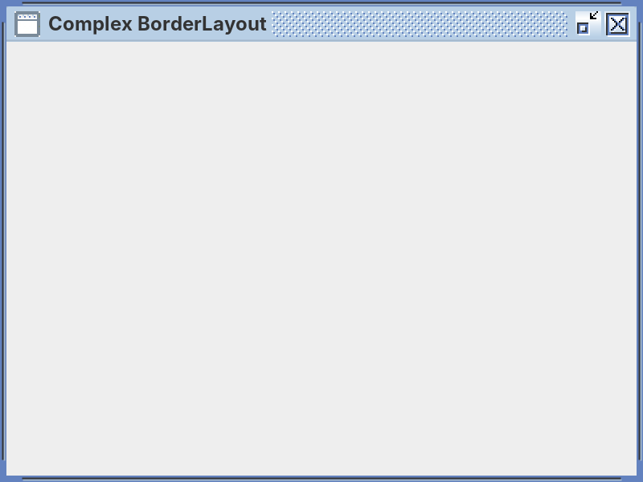
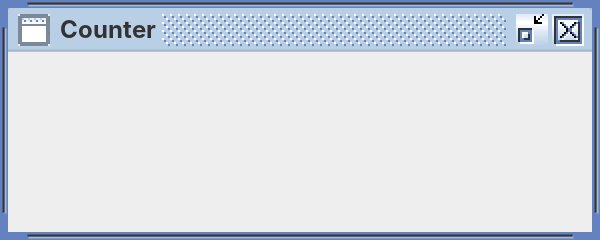
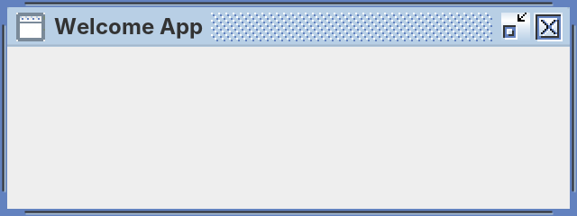

Université d'Alger 1 – Benyoucef Benkhedda
Faculty of Sciences · Computer Science Department
- Module
- Human-Computer Interaction (HCI)
- Level
- L3 – Semester 5 (ISIL, SI)
- Instructor
- Dr. Izountar Yousra
- Academic year
- 2026 / 2027
- Lab
- Lab 1.2 – Layout Managers and Events
- Duration
- 95 min
- Tools
- Java 21 (JDK) · VS Code · Swing
- Prerequisite
- Lab 1.1 (Java and VS Code installed, project TpSwing)
Layout Managers and Events
Arrange components with FlowLayout, GridLayout and BorderLayout, then make your interface interactive with ActionListener.
For each step you have the real interface to build (click its numbers to name each component) and the code, given stage by stage (it cannot be copied: type it yourself). After each stage you run the program and compare your window with the picture. Click any line of code to see what it does.
Objectives
- Arrange components with
FlowLayout,GridLayoutandBorderLayout. - Build a structured window by nesting
JPanelcontainers. - Handle user actions with
ActionListener(lambda expressions). - Read the user input from a
JTextFieldand give feedback (counter, message dialog).
Session plan
| Part | Time |
|---|---|
| 3. Layout Managers (Flow, Grid, Border) | 50 min |
| 4. Interactivity with ActionListener | 45 min |
| Total | 95 min |
Help guide help to work without problems
Read this page before starting and come back to it as soon as something does not work. Most problems of this lab are listed here.
1 · Before you start: checklist
- Lab 1.1 completed: JDK, VS Code and the project
TpSwingwork. - You can open, edit and run a class with a
JFrame. - Open a new file for each exercise (for example
Grid.java) and keep the class name equal to the file name.
2 · Quick reference for this lab
| Item | What it does |
|---|---|
FlowLayout | One component after the other, line by line. |
GridLayout(rows, cols, hgap, vgap) | Grid of cells of equal size, filled row by row. |
BorderLayout | 5 regions: NORTH, SOUTH, EAST, WEST, CENTER; one component per region. |
JPanel | Container with its own layout: nest panels to build a complex window. |
button.addActionListener(e -> { ... }) | Code executed at each click. |
field.getText() / label.setText(s) | Read the user input / change a displayed text. |
JOptionPane.showMessageDialog(this, "…") | Message dialog. |
Integer.parseInt(s) | Converts a text to an integer (can fail: use try / catch). |
3 · Common problems and how to fix them
| Symptom or message | Cause | Fix |
|---|---|---|
Two components in the same BorderLayout region: only one is visible | A region holds only one component: the second one replaces the first. | Put the components in a JPanel and add the panel to the region. |
| The button is clicked but nothing happens | addActionListener missing, or the listener is added to another button. | Check that the listener is attached to the button you click. |
| The counter does not change on screen | The variable changes but the label is not updated. | Call label.setText("" + count) inside the listener. |
local variables referenced from a lambda expression must be final or effectively final | A local variable (int count) cannot be modified inside a lambda. | Make the counter an attribute of the class (private int count;). |
NumberFormatException | The text typed is not a valid integer (empty, letters). | Surround Integer.parseInt with try / catch and show a clear message. |
| The grid has an unexpected shape | GridLayout(rows, cols): with 6 components and 2 rows you get 3 columns. | Match the numbers of rows and columns to the number of components. |
'javac' is not recognized / command not found | A JRE (no compiler) is installed, or the terminal was opened before the installation (PATH not updated). | Install the JDK (Temurin 21), close and reopen the terminal, check javac -version. |
class X is public, should be declared in a file named X.java | The class name and the file name are different (case matters). | Rename the file or the class so that they are identical: RoomBooking ↔ RoomBooking.java. |
cannot find symbol on JFrame, JButton, Color… | Missing import or typo (Java is case sensitive). | Add import javax.swing.*; and import java.awt.*; (and java.awt.event.* if needed) at the top of the file. |
| Red underlines everywhere, Run button missing | VS Code did not open a Java project (you opened a single file) or the Java extension is still loading. | File → Open Folder on the project folder, wait for the loading indicator to end, restart VS Code if needed. The Run link appears above main. |
| The program runs but no window appears | setVisible(true) is missing, or an exception stopped the program before. | Call setVisible(true) at the end (in main) and read the red text in the terminal. |
| The window closes but the program keeps running | The close operation is not defined. | setDefaultCloseOperation(JFrame.EXIT_ON_CLOSE); — or press the red square in VS Code to stop it. |
HeadlessException | The program runs on a machine without a screen (remote SSH, Linux without a graphical session). | Run it on your own computer with a display. |
| A component is invisible | add(...) forgotten, added to another panel, or no size when the layout is null. | Check that every component is added to the right container; avoid null layout. |
4 · Tips and working method
- Draw the window on paper first: which panels, which layout in each?
- Colour the background of each panel temporarily (
setBackground) to see how the layout works. - Test with a bad input (empty field, letters) before saying a step is done.
- If you are stuck for more than 5 minutes: re-read the step, compare with the mockup, search the error message, then ask your instructor with the exact error message and your code.
5 · What to hand in
- Your .java file(s) of the lab, with the class names given in the steps.
- A screenshot of each running window, when a step asks for it.
- Send them the way your instructor asks (file names with your name and group).
- Before sending: close VS Code, reopen your project and run it once more: it must work from scratch.
3. Layout Managers (Flow, Grid, Border) ⏱ 50 min
3.1Grid Layout Manager (GridLayout)
⏱ 20 min
Grid Layout Manager (GridLayout)
⏱ 20 minOrganize labels and text fields using a regular 3-row by 2-column grid.
Guidelines
- Layout Manager:
setLayout(new GridLayout(3, 2, 10, 10)) - Alternately add each
JLabelfollowed by its correspondingJTextField
Build this window in 2 stages. In each stage: type the green lines, run, and compare your window with the picture. Then go to the next stage.
FormLayout.java Components of Lecture 4 in this window
| # | Lecture 4 name | Swing class | Why |
|---|---|---|---|
| 1 | Label (non-editable text) | JLabel | Text attached to a component, or information the user cannot change. |
| 2 | Label (non-editable text) | JLabel | Text attached to a component, or information the user cannot change. |
| 3 | Label (non-editable text) | JLabel | Text attached to a component, or information the user cannot change. |
3.2Structured Layout (BorderLayout & Panels)
⏱ 30 min
Structured Layout (BorderLayout & Panels)
⏱ 30 minCombine BorderLayout with a nested JPanel at the bottom (aligned to the right with FlowLayout.RIGHT).
Guidelines
- Main Window:
setLayout(new BorderLayout(10, 10)) - Place header label in
BorderLayout.NORTH - Create a
JPanelconfigured withFlowLayout(FlowLayout.RIGHT)and attach it toBorderLayout.SOUTH - Colours (as in the expected UI): for a
JLabelcallsetOpaque(true)thensetBackground(new Color(0x2196F3))(header, blue, white bold text),0xFFEB3B(Menu, yellow),Color.WHITE(content); the bottom panel usessetBackground(new Color(0xE0E0E0)). WithoutsetOpaque(true)a label shows no background.
Build this window in 4 stages. In each stage: type the green lines, run, and compare your window with the picture. Then go to the next stage.

ComplexBorder.java Components of Lecture 4 in this window
| # | Lecture 4 name | Swing class | Why |
|---|---|---|---|
| 1 | Label (non-editable text) | JLabel | Text attached to a component, or information the user cannot change. |
| 2 | Label (non-editable text) | JLabel | Text attached to a component, or information the user cannot change. |
| 3 | Label (non-editable text) | JLabel | Text attached to a component, or information the user cannot change. |
| 4 | Push button | JButton | Executes an action when clicked (triggering task). |
| 5 | Push button | JButton | Executes an action when clicked (triggering task). |
4. Interactivity with ActionListener ⏱ 45 min
4.1Event Handling: Click Counter
⏱ 25 min
Event Handling: Click Counter
⏱ 25 minCreate a button that increments a counter variable and updates the JLabel text upon every click.
Guidelines
- Declare
private int count = 0;as a class attribute (field) - Attach listener:
button.addActionListener(e -> { count++; label.setText("Clicks: " + count); });
Build this window in 3 stages. In each stage: type the green lines, run, and compare your window with the picture. Then go to the next stage.

CounterApp.java Components of Lecture 4 in this window
| # | Lecture 4 name | Swing class | Why |
|---|---|---|---|
| 1 | Label (non-editable text) | JLabel | Text attached to a component, or information the user cannot change. |
| 2 | Push button | JButton | Executes an action when clicked (triggering task). |
4.2Text Processing and Confirmation Dialog
⏱ 20 min
Text Processing and Confirmation Dialog
⏱ 20 minRetrieve user input from a JTextField upon button click and display a personalized message.
Guidelines
- Retrieve input string:
String name = textField.getText(); - Display pop-up dialog using
JOptionPane.showMessageDialog(this, "Welcome " + name);or update aJLabel
Build this window in 3 stages. In each stage: type the green lines, run, and compare your window with the picture. Then go to the next stage.

WelcomeApp.java Components of Lecture 4 in this window
| # | Lecture 4 name | Swing class | Why |
|---|---|---|---|
| 1 | Push button | JButton | Executes an action when clicked (triggering task). |
Human-Computer Interaction · Université d'Alger 1 · Your “I'm done” ticks are saved in your browser only.